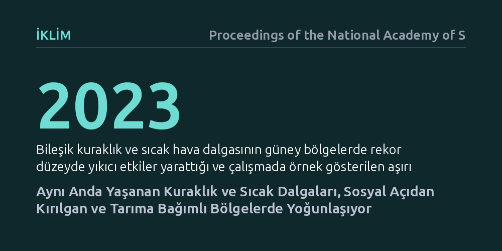

IKLIM · Proceedings of the National Academy of Sciences · 2026-10-09
Araştırmacılar, aynı anda görülen kuraklık ve sıcak hava dalgalarının coğrafi dağılımı ile toplumsal kırılganlık arasındaki ilişkiyi inceledi. Bu birleşik iklim afetlerinin en sık tarıma bağımlı ve sosyoekonomik açıdan en hassas bölgelerde yoğunlaştığı belirlendi.
İklim krizinin getirdiği aşırı hava olaylarının herkesi eşit etkilemediğini, en yıkıcı çifte afetlerin bunlarla başa çıkma gücü en zayıf olan toplulukları hedef aldığını gösteriyor.

Tek bir sıcak hava dalgası ya da tek başına bir kuraklık dönemi bile su kaynaklarını, tarımsal üretimi ve insan sağlığını ciddi biçimde zorlamaya yeterlidir. Ancak bu iki olay aynı anda ve aynı bölgede meydana geldiğinde etkileri basit bir toplamın çok ötesine geçer. Bilim dünyasında "bileşik kuraklık ve sıcak hava dalgası" olarak adlandırılan bu olaylar; hidrolojik kaynakların hızla tükenmesine, elektrik şebekelerinin aşırı yüklenmesine, ürün kayıplarına ve sıcağa bağlı can kayıplarının katlanmasına yol açar.
Buradaki temel soru, bu tehlikeli çifte afetlerin coğrafi olarak rastgele mi dağıldığı, yoksa belirli toplulukların üzerinde mi yoğunlaştığıdır. Daha da önemlisi, bu olayların vurduğu yerlerde yaşayan insanların ekonomik ve sosyal açıdan bu şoklara dayanabilecek imkânlara sahip olup olmadığıdır. Afetin fiziksel şiddeti kadar, vurduğu toplumun direnci de sonucun bir felakete dönüşüp dönüşmeyeceğini belirler.
Araştırmacılar, Amerika Birleşik Devletleri genelini kapsayan geniş ölçekli gözlemsel iklim verilerini masaya yatırdı. Uzun yıllara yayılan sıcaklık ve kuraklık göstergeleri taranarak, her iki afetin aynı zaman diliminde üst üste bindiği dönemler tespit edildi. Bu olayların sıklığı, süresi ve mekânsal dağılımı yüksek çözünürlüklü coğrafi analizlerle modellendi.
Elde edilen iklim tehlikesi haritaları, bölgelerin sosyoekonomik kırılganlık endeksleriyle ve tarımsal bağımlılık oranlarıyla karşılaştırıldı. Gelir seviyesi, yaşlı nüfus oranı, sağlık hizmetlerine erişim ve açık alanda fiziksel iş gücüne dayalı tarımsal istihdam gibi değişkenler mekânsal istatistik yöntemleriyle incelenerek afetlerin toplumsal dokuyla nasıl kesiştiği ortaya kondu.
Elde edilen bulgular, bileşik kuraklık ve sıcak hava olaylarının rastgele dağılmadığını; aksine sosyal kırılganlığı yüksek ve geçimini tarımdan sağlayan kırsal bölgelerde belirgin biçimde kümelendiğini gösterdi. Bir başka deyişle, iklimin en sert vurduğu yerler, aynı zamanda ekonomik olarak toparlanma gücü en zayıf olan yerleşimler oldu.
Özellikle açık alanda çalışan tarım işçilerinin yoğun olduğu ve yaşlı nüfusun sağlık altyapısına erişiminin kısıtlı bulunduğu kırsal alanlar çifte risk altında kalmaktadır. Çalışmanın belirttiği üzere, "bileşik kuraklık ve sıcak hava dalgası olayları sağlık, tarım, enerji sistemleri ve yerel ekonomiler üzerindeki riskleri şiddetlendirmektedir." 2023 yılında ABD'nin güney kesimlerinde kaydedilen rekor kırıcı aşırı hava koşulları, bu yoğunlaşmanın sahadaki somut ve yıkıcı bir göstergesi oldu.
Bu sonuçlar, iklim uyum politikalarının yalnızca meteorolojik tahminlere ve mühendislik çözümlerine dayandırılamayacağını açıkça ortaya koymaktadır. Bir bölgenin su rezervlerini artırması tek başına yeterli değildir; çünkü afetin vurduğu nüfus yoksulluk, güvencesiz çalışma koşulları ve yetersiz sağlık altyapısıyla mücadele ediyorsa yıkım kaçınılmaz hale gelir.
Gelecekteki afet yönetimi stratejileri, iklim modelleri ile sosyal destek programlarını birleştirmek zorundadır. Tarım işçilerini aşırı sıcaktan koruyan yasal düzenlemeler, kırsal sağlık altyapısının güçlendirilmesi ve ekonomik destek fonlarının en kırılgan bölgelere öncelikli olarak yönlendirilmesi, iklim değişikliğinin insani ve ekonomik maliyetini azaltmanın en doğrudan yoludur.